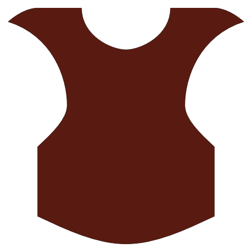

基本資源
| 食物: | 0 | (最多儲存: 200) | 0/秒 | ||
| 木材: | 0 | (最多儲存: 200) | 0/秒 | ||
| 石材: | 0 | (最多儲存: 200) | 0/秒 |
特殊資源
| 獸皮: | 0 | 皮革: | 0 |  | |
| 藥草: | 0 | 虔誠: | 0 | ||
| 礦石: | 0 | 金屬: | 0 | ||
| 黃金: | 0 | ||||
建築
附加功能
神明
征戰
貿易
建築
增加:
| 帳幕: | 0 | 2個獸皮, 2個木材: +1最多人口 | |||||
| 小木屋: | 0 | 1個獸皮, 20個木材: +3最多人口 | |||||
| 茅舍: | 0 | 10個木材, 30個石材: +6最多人口 | |||||
| 房子: | 0 | 30個木材, 70個石材: +10最多人口 | |||||
| 豪宅: | 0 | 200個木材, 200個石材, 20個皮革: +50最多人口. | |||||
| 糧倉: | 0 | 100個木材: 儲存 +200 食物 | |||||
| 木材庫存: | 0 | 100個木材: 儲存 +200 木材 | |||||
| 石材庫存: | 0 | 100個木材: 儲存 +200 石材 | |||||
| 製革廠: | 0 | 30個木材, 70個石材, 2個獸皮: 允許1個皮匠 | |||||
| 鐵匠舖: | 0 | 30個木材, 70個石材, 2個礦石: 允許1個鐵匠 | |||||
| 藥房: | 0 | 30個木材, 70個石材, 2個藥草: 允許1個藥劑師 | |||||
| 神殿: | 0 | 30個木材, 120個石材, 10個藥草: 允許1個神職人員 | |||||
| 兵營: | 0 | 20個食物, 60個木材, 120個石材, 10個金屬: 允許10個士兵 | |||||
| 馬廄: | 0 | 60個食物, 60個木材, 120個石材, 10個皮革: 允許10個騎兵 | |||||
| 墓地: | 0 | 100個木材; 200個石材, 50個藥草: 供100個墳墓 | |||||
| 磨坊: | 0 | 100個木材, 100個石材: 增加農夫效率 | |||||
| 防禦工事: | 0 | 100個石材: 保衛文明以免受敵人的攻擊 |
附加功能
農夫可採集獸皮伐木工可採集藥草
礦工可採集礦石
增加農夫產量
增加農夫產量
增加農夫產量
更多農夫採集更多獸皮
更多伐木工採集更多藥草
更多礦工採集更多礦石
更多伐木工採集更多藥草
更多礦工採集更多礦石
採集更多獸皮
採集更多礦石
採集更多礦石
增加農夫產量
增加農夫產量
增加農夫產量
開啓更多建築和附加功能增加農夫產量
增加農夫產量
開啓更多建築和附加功能
開啓更多建築和附加功能
房屋可供 +2 工人居住
房屋可供 +2 工人居住
糧倉可儲存2倍的食物
減少敵人的損壞
增加士兵效率
增加士兵效率
建立馬廄
建立磨坊
增加神職人員虔誠產量
增加士兵效率
建立馬廄
建立磨坊
增加神職人員虔誠產量
增加劫掠時征來的土地
減少人口擁擠所導致的不滿
建立攻城塔
建立神殿可增加滿意度
增加點擊可獲的基本資源減少人口擁擠所導致的不滿
建立攻城塔
建立神殿可增加滿意度
點擊可獲得更多資源
增加點擊可獲得的特殊資源
無業工人可增加點擊時所獲得的資源
士兵增加點擊所獲得的基本資源
增加點擊可獲得的特殊資源
無業工人可增加點擊時所獲得的資源
士兵增加點擊所獲得的基本資源
已獲附加功能
剝皮 - 農夫可採集獸皮
收割 - 伐木工可採集藥草
勘探 - 礦工可採集礦石
馴養 - 增加農夫產量
灌溉 - 增加農夫產量
屠宰 - 更多農夫採集更多獸皮
園藝 - 更多伐木工採集更多藥草
開採 - 更多礦工採集更多礦石
剝取脂肪 - 採集更多獸皮
浸軟 - 採集更多礦石
輪作 - 增加農夫產量
選擇育種 - 增加農夫產量
肥料 - 增加農夫產量
石工術 - 開啓更多建築和附加功能
建築業 - 開啓更多建築和附加功能
建築術 - 開啓更多建築和附加功能
租屋 - 房屋可供 +2 工人居住
貧民窟 - 房屋可供 +2 工人居住
穀倉 - 糧倉可儲存2倍的食物
木柵 - 減少敵人的損壞
基本武器 - 增加士兵效率
基本盾牌 - 增加士兵效率
馬術 - 建立馬廄
車輪 - 建立磨坊
文學 - 增加神職人員虔誠產量
行政 - 增加劫掠時征來的土地
法典 - 減少人口擁擠所導致的不滿
數學 - 建立攻城塔
美學 - 建立神殿可增加滿意度
文官 - 增加點擊可獲的基本資源
封建制度 - 點擊可獲得更多資源
行會 - 增加點擊可獲得的特殊資源
農奴 - 無業工人可增加點擊時所獲得的資源
民族主義 - 士兵增加點擊所獲得的基本資源
崇拜 - 允許崇拜神明
軍旗 - 可建立軍隊
貿易 - 開商棧
通貨 - 商人更加頻繁來做生意, 留下時間也更加長
商業 - 商人更加頻繁來做生意, 留下時間也更加長
神明
開始崇拜神明 (需要神殿)
註: 只可選一個
註: 只可選一個
註: 只可選一個
註: 只可選一個
註: 只可選一個
註: 只可選一個
註: 只可選一個
戰力
| 200個石材, 200個虔誠, 50個金屬: +1忠誠 | ||
| 10個忠誠 | 1000個虔誠: 增加士兵效率 | |
| 20個忠誠 | 每個侵略者需100個虔誠 | |
| 30個忠誠 | 1000個虔誠: slaying enemies creates temples | |
| 40個忠誠 | 1000個虔誠: Temporarily makes raids more difficult, increases rewards | |
| 50個忠誠 | 5000個虔誠: Successful raids delay future invasions |
The Bounty of the Fields
| 500個食物, 500個木材, 200個石材, 200個虔誠: +1 devotion | ||
| 10個忠誠 | 1000個虔誠: 增加農夫產量 | |
| 20個忠誠 | 500個木材, 1 worker: random bonus to a resource | |
| 30個忠誠 | 1000個虔誠: workers will eat corpses if there is no food left | |
| 40個忠誠 | 1 worker per second: boost food production | |
| 50個忠誠 | 5000個虔誠: traders stay longer |
The Dread Power of the Underworld
| 200個石材, 200個虔誠, 1 corpses: +1 devotion | ||
| 10個忠誠 | 1000個虔誠: gain piety with deaths | |
| 20個忠誠 | 1個虔誠: to raise the next zombie | |
| 30個忠誠 | 1000個虔誠: corpses are less likely to cause illness | |
| 40個忠誠 | 1000個虔誠: Souls of the defeated rise to fight for you | |
| 50個忠誠 | 5000個虔誠: graveyards increase cleric piety generation |
The Grace of Cats
| 200個石材, 200個虔誠, 100個藥草: +1 devotion | ||
| 10個忠誠 | 1000個虔誠: increase chance to get cats | |
| 20個忠誠 | 100個虔誠: Give temporary boost to food production | |
| 30個忠誠 | 1000個虔誠: cats help heal the sick | |
| 40個忠誠 | 1000個虔誠: Increase Happiness | |
| 50個忠誠 | 5000個虔誠: traders marginally more frequent |
Remove an old deity
征戰
允許成立軍隊 (需要兵營)軍隊
| 增加: | ||||||||||||
| 士兵: | 0 | |||||||||||
| 騎兵: | 0 | |||||||||||
| 攻城塔: | 0 | 50個金屬, 50個皮革, 200個木材 | ||||||||||
| 敵軍: | 0 | |||||||||||
| 防禦工事: | 0 |
開戰!
榮耀: 還剩0秒鐘
勝利!
貿易
開商棧
商人更加頻繁來做生意, 留下時間也更加長
商人更加頻繁來做生意, 留下時間也更加長
增加奇觀進度
商人更加頻繁來做生意, 留下時間也更加長
增加奇觀進度